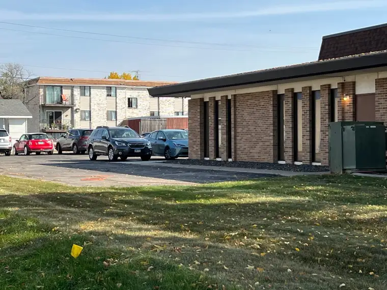
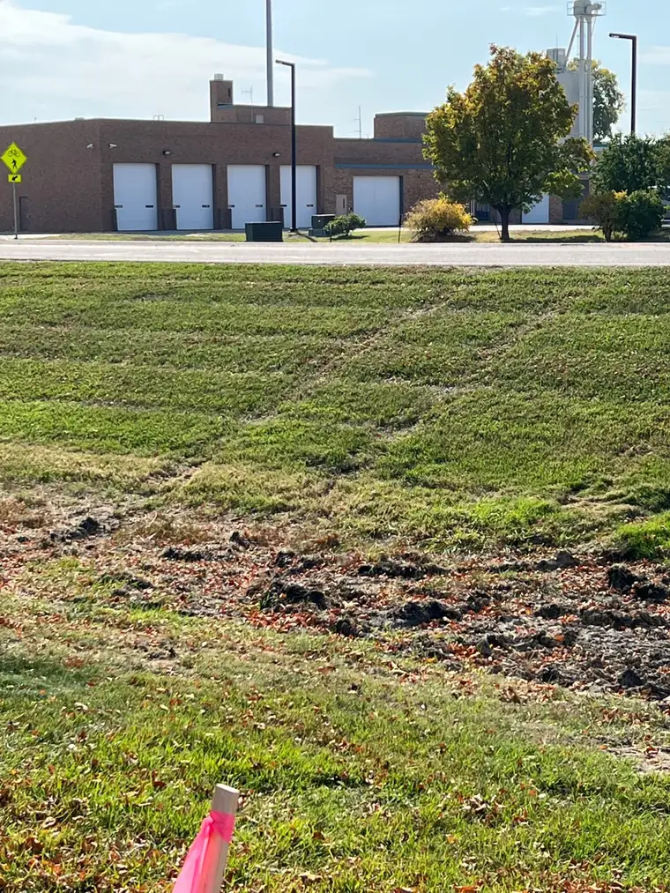
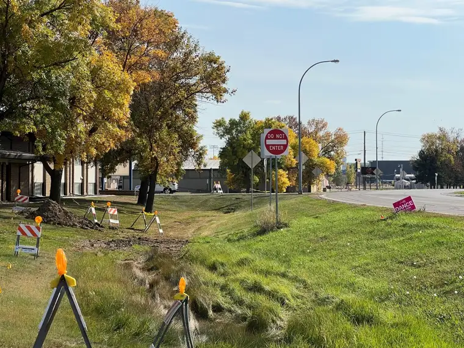

Abortion does strange things to people. This statement should not come as a surprise, for we can never shrug off something as serious as ending the life of an innocent human being. If we try, it is bound to catch up with us eventually.
Recently, my comrades and I who pray, primarily in the afternoons, at the new abortion facility just across the Red River in Moorhead, Minn., peeked inside this strangeness when a client’s partner came to retrieve her.

In the new setup, a sidewalk lies perpendicular to the facility itself, and we prayer advocates are only allowed on that small strip of pavement. The building, surrounding grass, and large parking lot are off limits, and there is only one entrance from the road. Most of us stand near that entrance, and we have only a second or two to meet the gaze of the clients coming or going.
On a recent Wednesday, when the place is open for business, we caught sight briefly of a driver—perhaps the father of the baby who’d just died—coming to pick up a female client. He seemed to avoid our gaze, as do most.
After a while, the post-abortive woman he’d come to pick up emerged and got into the vehicle. What happened next was startling. The vehicle, instead of exiting onto the road to the south—the only exit—drove around the building to the north. There is pavement that wraps around the building from the parking lot, but it stops several hundred yards later. In other words, there is no way out that way.

“I guess he’ll be circling back here any minute, as soon as he realizes that’s not an exit,” one of the advocates said. We waited, expecting to see the vehicle pass by us again, but it never happened. Soon, we spotted that vehicle going at a fast pace on the highway perpendicular to the building to the west, heading south.
Wait now, what? We were fairly certain that was impossible, and we soon noticed one of the older escorts quietly walking around the corner at the north side of the building where the vehicle had turned, obviously also questioning what had just happened to the couple. After returning, she began whispering to her fellow escorts.
When it was time for me to go, I told my friends that I’d check out the north side of the building, out of eyesight from the sidewalk where we stand, to see how the vehicle had gotten out. I noticed tire prints in the grass, revealing the path the driver had taken on his way out; one he’d made himself.

In order to get out of the place in a way that he would avoid driving past us a second time, he had driven down a hill, through a muddy area that included the presence of construction cones and other obstructions, and up a steep ravine, onto Highway 75.
“Wow,” I thought. “He really didn’t want to see us again.”
Later, I shared the photos I took during that brief investigation with my friends, and as I reflected further on this incident, I pondered just how that moment or two would have gone down. I thought of the passenger of the vehicle, fresh from having her womb emptied, now in the vehicle driven by a man who, it seemed, did not want to face what had just happened. So instead of driving out the only exit, he chose to illegally create his own pathway out.

Several things about this struck me; firstly, the desperation of wanting to avoid the reality of abortion. Our gazes are not unkind. We are there offering a way out, not judgment. But the conscience will do what it needs to do, and in this case, it needed to run.
Beyond that, I thought of that poor woman who’d just experienced a trauma. What was it like for her as her driver took the pathway that didn’t even exist? Did she scream? Did she cry? Or perhaps she was the one who had directed him out the “back door.” I think the former is more likely, and my heart lurches at the thought of it.
Abortion does strange things to us. It drives those who choose it to illogical places. Our only hope is the love of a savior, whose pathway is the only road that leads to true peace.
[Note: I write about my experiences praying for the end to abortion at the sidewalk abutting the Red River Valley’s lone abortion facility for New Earth magazine — the official news publication of the Fargo Diocese. I hope you find “Sidewalk Stories” helpful in understanding the truth about abortion and how it plays out tragically in our corner of the world. The preceding ran in New Earth’s November 2022 issue.]